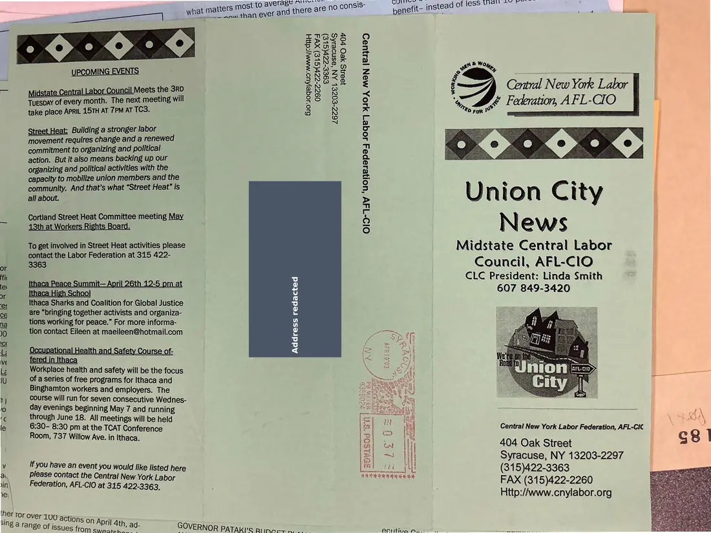
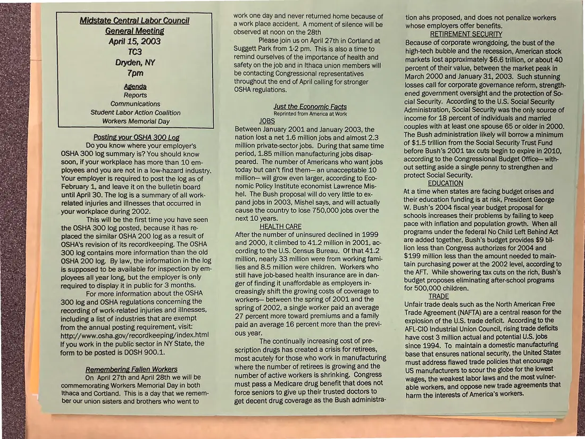

Newsletter, 2 pages
Union City News, Midstate Central Labor Council, April 2003
April 2003
Announces the April 15, 2003 general meeting and covers posting the OSHA 300 injury log, Workers Memorial Day, retirement security, and trade.
Download or cite this itemPages


(open zoom view)A personal home address has been covered on this page.
Read the page text (machine-read, contains errors)
This text was generated automatically from the photograph and has not been corrected. The image is the authoritative record.
yerage PAT N hoi jae pO A in aan f less qu Ped Re kt 3 tas me gust mar Hae ne and there are no consis benefit- instead 0 ‘ tha i eae ae ANNA INGOs ERoE 6 | FORE S | abeZg ¢ sienna SSI ORLA nS i : cos iat ee ey esk ; Central New York Labor | Ie i eae ey N 2 ; TUESDAY of every month. The next meeting will g 3S 8 = y re Federation, AFL-CIO take place APRIL 15TH AT 7PM AT TC3. 3 8 to ror © - Building a stronger labor movement requires change and a renewed commitment to organizing and political action. But it also means backing up our organizing and political activities with the capacity to mobilize union members and the community. And that’s what “Street Heat” is all about. Union City News Midstate Central Labor Council, AFL-ClO Cortland Street Heat Committee meeting May 13th at Workers Rights Board. To get involved in Street Heat activities please contact the Labor Federation at 315 422- O1D-TdV ‘UOHe1apsy JOge7] YO, MON [21}U9D Fi ae = CLC President: Linda Smith | = Ithaca Peace Summit— April 26th 12-5 pm at $ 607 849-3420 or Ithaca High School es Ithaca Sharks and Coalition for Global Justice 3 ce are “bringing together activists and organiza- = na tions working for peace.” For more informa- 4 0 tion contact Eileen at maeileen@hotmail.com id ct ; 3 i; Occupational Health and Safety Course of- < ve fered in Ithaca ie Workplace health and safety will be the focus co oe iU of a series of free programs for Ithaca and Binghamton workers and employers. The 2 course will run for seven consecutive Wednes- bs day evenings beginning May 7 and running re through June 18. All meetings will be held le 6:30- 8:30 pm at the TCAT Conference Sete ee tae Bedoretons AL Room, 737 Willow Ave. in Ithaca. 404 Oak Street S 8 Syracuse, NY 13203-2297 v eee ee oe you would like listed here (3 1 9)422-3363 ai please contact the Central New York Labor FAX (315)422-2260 vin\ Federation, AFL-CIO at 315 422-3363. : ve | 2 Http://www.cnylabor.org ther Tor over 100 4 ctions on April 4th, ad- "INE a range of issues from ah era aT GOVERNOR PATAKic aiinnee Alii AS to eee


(open zoom view)Read the page text (machine-read, mostly readable)
This text was generated automatically from the photograph and has not been corrected. The image is the authoritative record.
April 15, 2003 TC3 Dryden, NY 7pm Agenda Reports Communications Student Labor Action Coalition Workers Memorial Day Posting your OSHA 300 Log Do you know where your employer's OSHA 300 log summary is? You should know soon, if your workplace has more than 10 em- ployees and you are not in a low-hazard industry. Your employer is required to post the log as of February 1, and leave it on the bulletin board until April 30. The log is a summary of all work- related injuries and illnesses that occurred in your workplace during 2002. This will be the first time you have seen the OSHA 300 log posted, because it has re- placed the similar OSHA 200 log as a result of OSHA's revision of its recordkeeping. The OSHA 300 log contains more information than the old OSHA 200 log. By law, the information in the log is supposed to be available for inspection by em- ployees all year long, but the employer is only required to display it in public for 3 months. For more information about the OSHA 300 log and OSHA regulations concerning the recording of work-related injuries and illnesses, including a list of industries that are exempt from the annual posting requirement, visit: http://www.osha.gov/recordkeeping/index.html If you work in the public sector in NY State, the form to be posted is DOSH 900.1. Remembering Fallen Workers On April 27th and April 28th we will be commemorating Workers Memorial Day in both \thaca and Cortland. This is a day that we remem- ber our union sisters and brothers who went to ee EE ESE LR work one day and never returned home because of a work place accident. A moment of silence will be observed at noon on the 28th Please join us on April 27th in Cortland at Suggett Park from 1-2 pm. This is also a time to remind ourselves of the importance of health and safety on the job and in Ithaca union members will be contacting Congressional representatives throughout the end of April calling for stronger OSHA regulations. Just the Economic Facts Reprinted from America at Work JOBS Between January 2001 and January 2003, the nation lost a net 1.6 million jobs and almost 2.3 million private-sector jobs. During that same time period, 1.85 million manufacturing jobs disap- peared. The number of Americans who want jobs today but can’t find them— an unacceptable 10 million— will grow even larger, according to Eco- nomic Policy Institute economist Lawrence Mis- hel. The Bush proposal will do very little to ex- pand jobs in 2003, Mishel says, and will actually cause the country to lose 750,000 jobs over the next 10 years. HEALTH CARE After the number of uninsured declined in 1999 and 2000, it climbed to 41.2 million in 2001, ac- cording to the U.S. Census Bureau. Of that 41.2 million, nearly 33 million were from working fami- lies and 8.5 million were children. Workers who still have job-based health insurance are in dan- ger of finding it unaffordable as employers in- creasingly shift the growing costs of coverage to workers— between the spring of 2001 and the spring of 2002, a single worker paid an average 27 percent more toward premiums and a family paid an average 16 percent more than the previ- ous year. The continually increasing cost of pre- scription drugs has created a crisis for retirees, most acutely for those who work in manufacturing where the number of retirees is growing and the number of active workers is shrinking. Congress must pass a Medicare drug benefit that does not force seniors to give up their trusted doctors to get decent drug coverage as the Bush administra- tion ahs proposed, and does not penalize workers whose employers offer benefits. RETIREMENT SECURITY Because of corporate wrongdoing, the bust of the high-tech bubble and the recession, American stock markets lost approximately $6.6 trillion, or about 40 percent of their value, between the market peak in March 2000 and January 31, 2003. Such stunning losses call for corporate governance reform, strength- ened government oversight and the protection of So- cial Security. According to the U.S. Social Security Administration, Social Security was the only source of income for 18 percent of individuals and married couples with at least one spouse 65 or older in 2000. The Bush administration likely will borrow a minimum of $1.5 trillion from the Social Security Trust Fund before Bush’s 2001 tax cuts begin to expire in 2010, according to the Congressional Budget Office— with- out setting aside a single penny to strengthen and protect Social Security. EDUCATION At a time when states are facing budget crises and their education funding is at risk, President George W. Bush's 2004 fiscal year budget proposal for schools increases their problems by failing to keep pace with inflation and population growth. When all programs under the federal No Child Left Behind Act are added together, Bush’s budget provides $9 bil- lion less than Congress authorizes for 2004 and $199 million less than the amount needed to main- tain purchasing power at the 2002 level, according to the AFT. While showering tax cuts on the rich, Bush's budget proposes eliminating after-school programs for 500,000 children. TRADE Unfair trade deals such as the North American Free Trade Agreement (NAFTA) are a central reason for the explosion of the U.S. trade deficit. According to the AFL-CIO Industrial Union Council, rising trade deficits have cost 3 million actual and potential U.S. jobs since 1994. To maintain a domestic manufacturing base that ensures national security, the United States must address flawed trade policies that encourage US manufacturers to scour the globe for the lowest wages, the weakest labor laws and the most vulner- able workers, and oppose new trade agreements that harm the interests of America’s workers.
See something wrong, or recognize a person or event? Send a correction. If you hold rights in this item or think it should not be public, write to the same address.